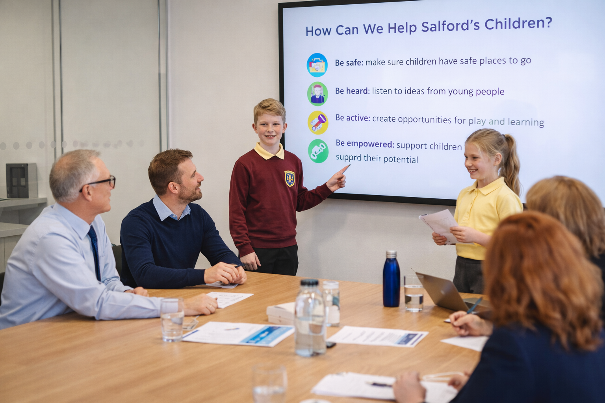

Organisations
This section is for organisations, schools, community groups and partners who want to support Child Friendly Salford. The programme is built on collaboration and shared responsibility, bringing together people and organisations who are committed to improving outcomes for children and young people across the city.
Engaging the private sector
Private sector organisations also have an important role to play in building a child friendly city. Through this programme, companies and businesses are encouraged to support the local community and invest in the future of Salford’s children and young people.

By contributing time, resources, skills or opportunities, organisations can help ensure that children grow up with the confidence, knowledge and opportunities they need to thrive. This is about supporting not only happy and honest individuals, but also capable, skilled and forward-thinking people who can plan for the future and contribute positively to the community they live in.
Child Friendly Salford offers a shared framework for organisations that want to make a meaningful, long-term contribution to the city, helping to create a stronger, more inclusive Salford for generations to come.
Partner with us
Child Friendly Salford works with organisations across the public, voluntary and education sectors to embed children’s rights into everyday practice. By working together, partners can help ensure that children and young people feel safe, listened to and supported, and that their voices help shape decisions that affect their lives.
Start a conversationShare opportunities
If your organisation offers activities, support or resources for children and families, we can help signpost them.
Submit informationStay informed
Follow programme updates, news and key milestones as we develop the local Child Friendly approach.
View updates